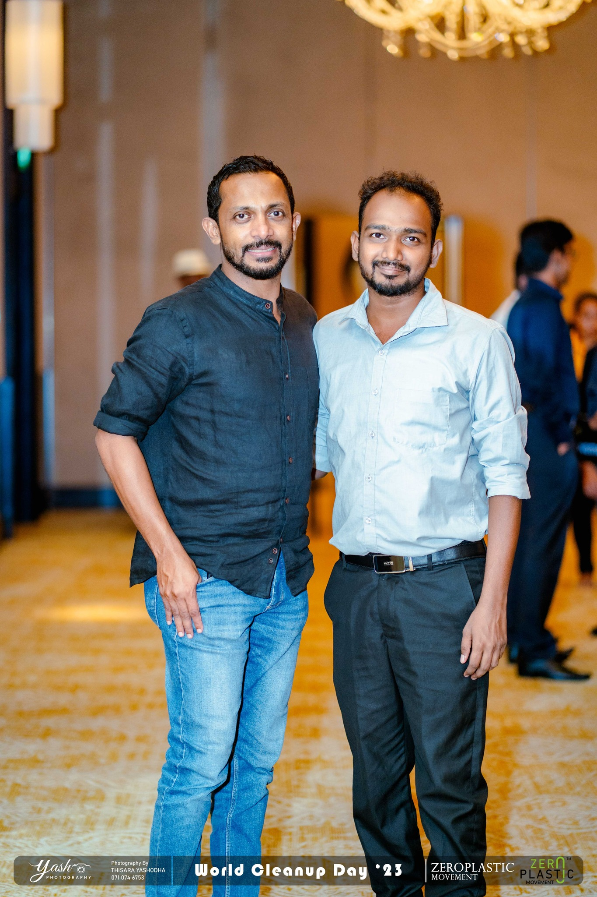
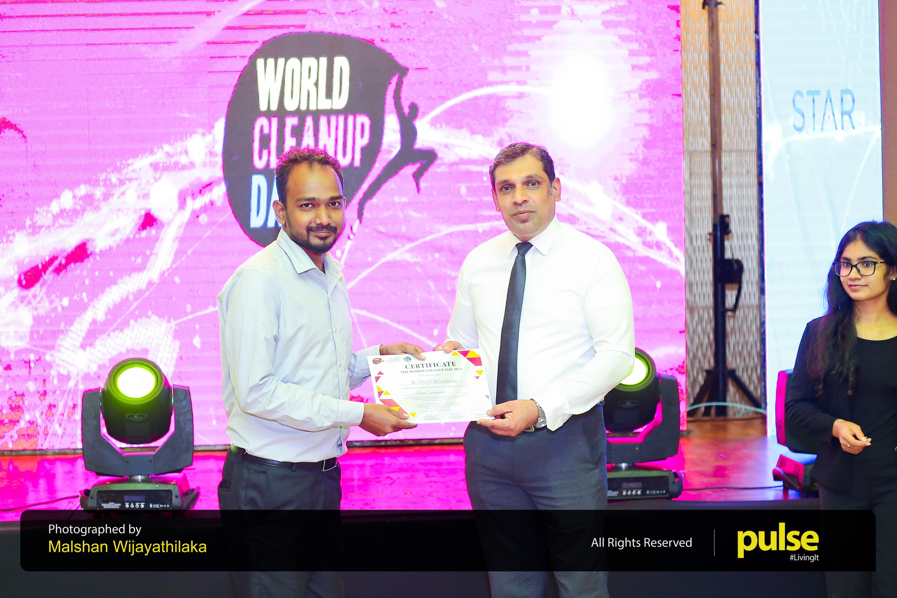
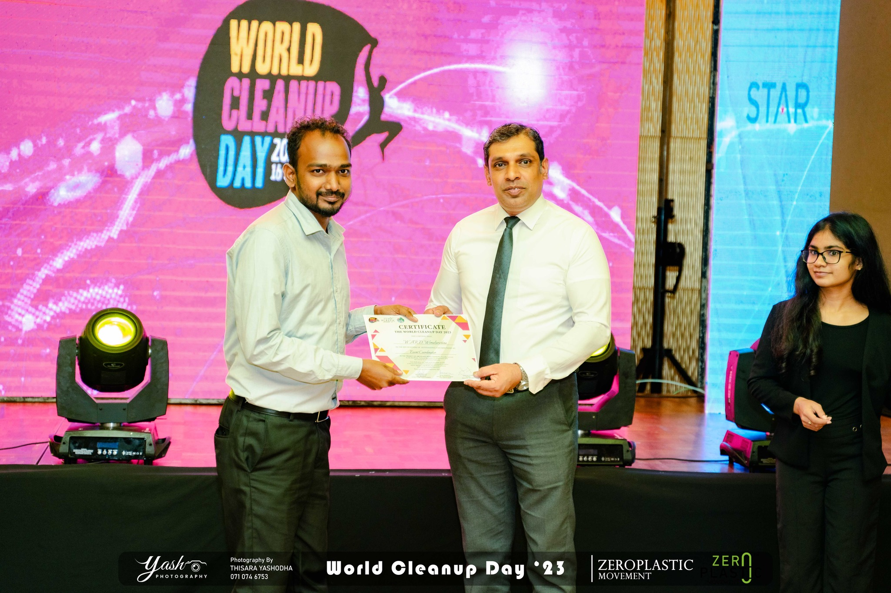

Check out the latest breaking news headlines on development
-
August 15, 2023 Awards
ZeroPlastic World CleanUp Day
“Over 680 Cleanup Initiatives Bring Communities Together for a Cleaner, Greener Future”
In a remarkable display of unity and environmental stewardship, Sri Lanka celebrated World Cleanup Day with unwavering commitment and enthusiasm. Coordinated by the ZeroPlastic Movement and the Central Environmental Authority, with invaluable support from the Star Garment Group, this nationwide endeavor saw over 680 cleanup initiatives carried out across the country.
The success of World Cleanup Day was not limited to grassroots efforts. The National Youth Services Council and the Ministry of Public Administration, Home Affairs, Provincial Councils, and Local Government played pivotal roles in facilitating and endorsing the cleanup initiatives. Their support underscored the government’s commitment to environmental conservation and sustainability. ZeroPlastic University Clubs across the nation also played a pivotal role in organizing and guiding all 680 cleanup initiatives. Their dedication and leadership in mobilizing young minds for environmental action promise a brighter and cleaner future for Sri Lanka.
The collective efforts of citizens, businesses, government bodies, and youth organizations on World Cleanup Day demonstrate the power of collaboration in addressing environmental challenges.
Sri Lanka is on a path toward a cleaner, greener future, driven by the shared responsibility and determination of its people. As the nation reflects on this momentous achievement, it is a reminder that a united effort can bring about positive change and create a sustainable environment for generations to come. World Cleanup Day in Sri Lanka serves as a shining example of what can be achieved when a nation comes together for a common cause the preservation of our planet.
In the spirit of this remarkable achievement, Sri Lanka reaffirms its commitment to environmental responsibility, with the hope that it will inspire other nations to join the global movement for a cleaner, greener earth. Together, we can make a difference and leave a lasting legacy of environmental stewardship for future generations.
   -
In our ongoing journey towards sustainability, one remarkable event stands out: the Plastic to Art Challenge, spearheaded by the ZeroPlastic National Movement. Held at the elegant Cinnamon Lakeside Hotel, this initiative brought together schools to embark on a transformative journey from waste to wonder.
As an organizing committee member, I witnessed firsthand the power of collective action and creativity in reshaping our relationship with plastic. Through innovative workshops and hands-on experiences, students learned not only the detrimental effects of plastic pollution but also the potential for change.
"Cultivating creativity from waste not only transforms our environment but also reshapes our perspective, turning what was once discarded into the seeds of innovation and possibility."
From discarded bottles to repurposed sculptures, each artwork spoke volumes about our capacity to reimagine, repurpose, and renew. The Plastic to Art Challenge isn't just about crafting masterpieces; it's about igniting a spark of inspiration, fostering a culture of sustainability, and paving the way for a brighter, cleaner future.
-
June 02, 2021 Competition
PIXEL EYE 4.0 | Design Competition By FMS,RUSL
PixelEye V4.0, the highly anticipated inter-university design battle of 2023, is just around the corner, promising an exhilarating showcase of talent and innovation.
As a participant in PixelEye V4.0, I am thrilled to be part of this dynamic platform where creativity knows no bounds. It's not just a competition; it's a journey towards self-discovery and artistic exploration. With each stroke of the digital brush and every pixel manipulated, we are shaping the future of design and pushing the boundaries of imagination.
PixelEye V4.0 is more than just a battle of skills; it's a celebration of the intersection between talent and technology. In an era where digital art reigns supreme, this competition challenges us to harness the power of technology to communicate our ideas, emotions, and perspectives in innovative ways.
"In the realm of digital art, every pixel is a canvas, and every stroke is a brushstroke of possibility."
Beyond the thrill of competition, PixelEye V4.0 fosters a spirit of collaboration and camaraderie among participants. It's a platform where diverse talents converge, exchange ideas, and inspire one another to reach new heights of creativity. Through collaboration, we amplify our individual strengths and collectively redefine the boundaries of artistic expression.
As we embark on this exhilarating journey, let us embrace the challenges, cherish the moments of inspiration, and revel in the joy of creation. Whether we emerge victorious or not, PixelEye V4.0 is an opportunity to learn, grow, and forge lifelong connections with fellow artists and designers. So, stay tuned as we dive headfirst into the immersive world of digital art, where every pixel tells a story and every design is a testament to the limitless potential of the human imagination.